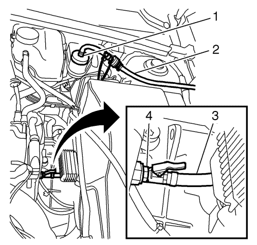

Purga del sistema de embrague hidráulico
Herramientas especiales
DT-6174-A Conexión del conjunto de tubos flexibles
Si desea informarse sobre herramientas regionales equivalentes, consultar Herramientas especiales .
Procedimiento
Advertencia: Consulte Aviso de líquido de frenos irritante en la sección Prólogo.
Atención: El líquido de frenos no debe entrar en contacto con grasas ni aceites minerales. Una mínima cantidad de esas sustancias podría ocasionar un fallo o la avería del embrague.
Precaución: Consulte Advertencia sobre los efectos del líquido de frenos sobre la pintura y los componentes eléctricos en la sección Prólogo
Nota: Utilice sólo líquido de frenos DOT 4+. Ahora, el accionamiento hidráulico del embrague sólo debe purgarse desde abajo, es decir, desde la válvula de purga. Para ello debe usarse un aparato de purga de frenos - véase el catálogo "Equipo de taller". Ya no está permitida la purga manual. Observe las instrucciones del fabricante antes de usar el aparato de purga de frenos. El aparato de purga de frenos debe ajustar a una presión de servicio de aproximadamente 2 bares.

- Acople el aparato de purga de frenos.
| • | Enrosque el adaptador (1) para el aparato de purga de frenos correspondiente en el depósito del líquido de frenos. |
| | Nota: Inserte el extremo del tubo flexible en un recipiente de recogida adecuado para el líquido de frenos. |
| • | Conecte el conjunto DT-6174-A (2) al adaptador. |
| • | Desmonte la caperuza protectora de la válvula de purga. |
| • | Conecte el conjunto de conexión de tubos flexibles DT-6174-A (3) a la válvula de purga (4). |
| • | Conecte el conjunto DT-6174-A al aparato de purga de frenos. |
- Purgue el embrague.
| • | Conecte el aparato de purga de frenos. |
| • | Abra la válvula de purga 2-3 vueltas. |
| • | Purgue hasta que el líquido de frenos salga sin burbujas en el conjunto DT-6174-A. |
| • | Cierre manualmente la válvula de purga. |
- Desacople el aparato de purga de frenos.
| • | Separe el adaptador del depósito del líquido de frenos. |
| • | Coloque la caperuza sobre la válvula de purga para protegerla. |
| | Nota: Deben realizarse los siguientes pasos para llenar la tubería de presión entre la carcasa de la caja de cambios y el desembrague centralizado. Durante la purga, asegúrese de que el depósito del líquido de frenos esté lo suficientemente lleno y no se quede vacío. |
- Purgue la tubería de presión entre la carcasa de la caja de cambios y el desembrague centralizado.
| • | Mantenga pisado el pedal del embrague. |
| • | Abra la válvula de purga hasta que salga aire o una mezcla de aire y líquido de frenos. |
| • | Cierre manualmente la válvula de purga. |
| | Nota: No cierre la válvula de purga demasiado rápido. |
| • | Suelte el pedal del embrague hasta el tope a velocidad normal. |
| • | Espere 5 segundos aproximadamente. |
| • | Repita este proceso de purga 4 veces. |
| • | Apriete la válvula de purga. |
| • | Separe el conjunto DT-6174-A. |
| • | Coloque la caperuza en la válvula de purga para protegerla. |
- Conecte el conjunto DT-6174-A a la válvula de purga, coloque el extremo libre en un recipiente de conexión adecuado.
- Rellene el depósito del líquido de frenos.
| • | Llene el depósito del líquido de frenos hasta la marca "MAX". |
| • | Instale el depósito del líquido de frenos. |
- Compruebe la presión de accionamiento del pedal del embrague.
- Compruebe si existe desplazamiento con el vehículo en reposo, el motor en marcha y el embrague desembragado.
- Realice una prueba en carretera del vehículo para asegurar que todo funciona correctamente.
Realice la prueba de conducción variando el régimen de rpm y cambiando de marcha con frecuencia; en el proceso, el vehículo debe alcanzar la temperatura de funcionamiento. Asegúrese de que el sistema de frenos y embrague funciona correctamente.
| © Copyright Chevrolet. Reservados todos los derechos |